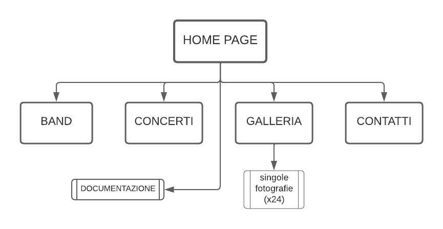
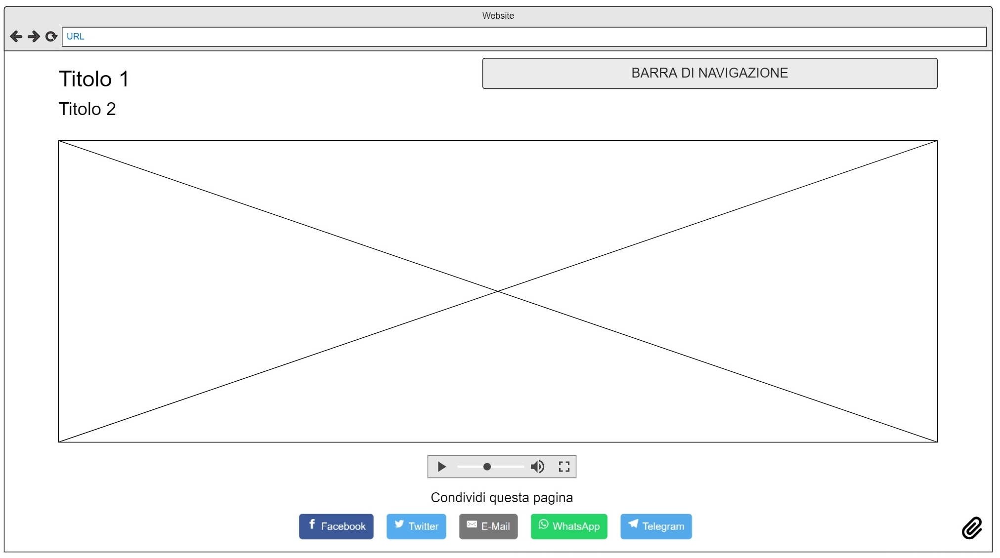
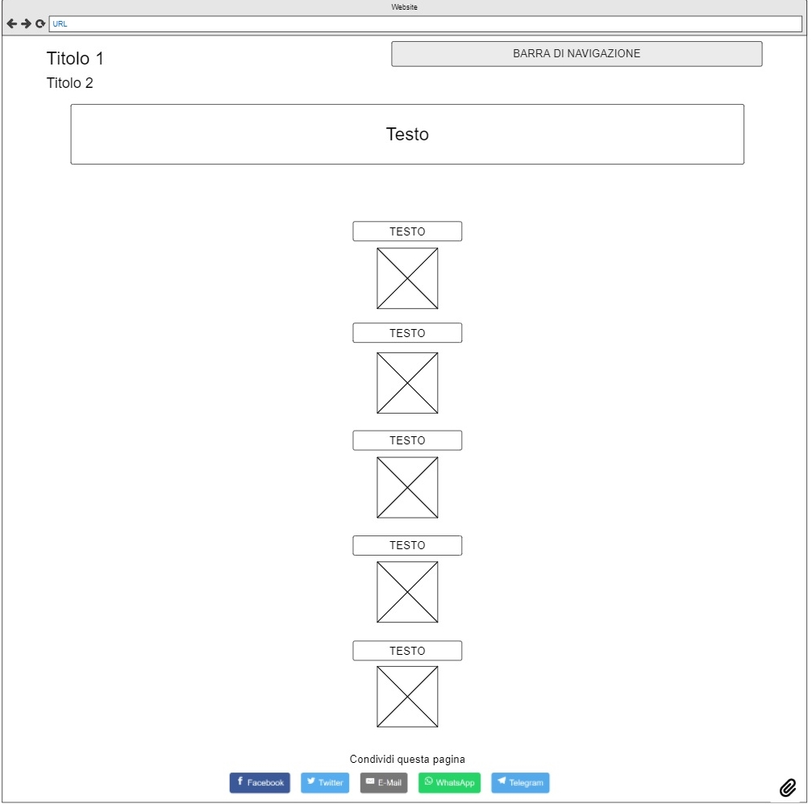
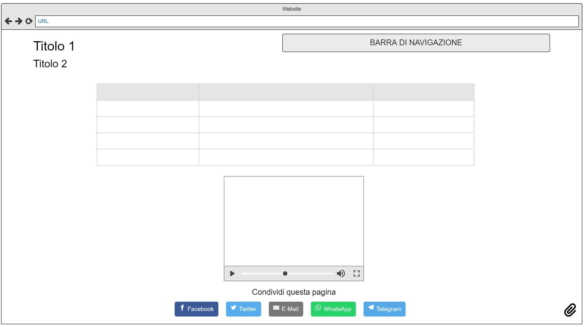
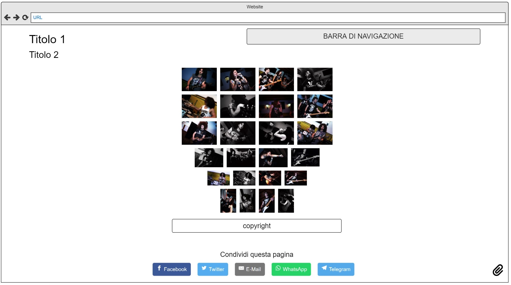
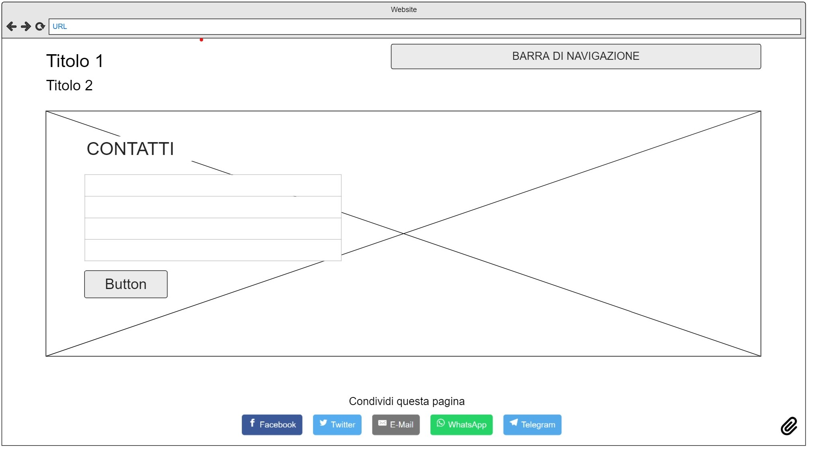
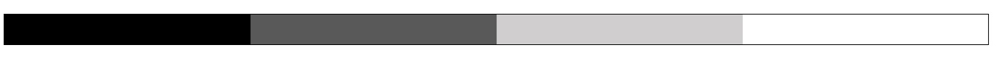
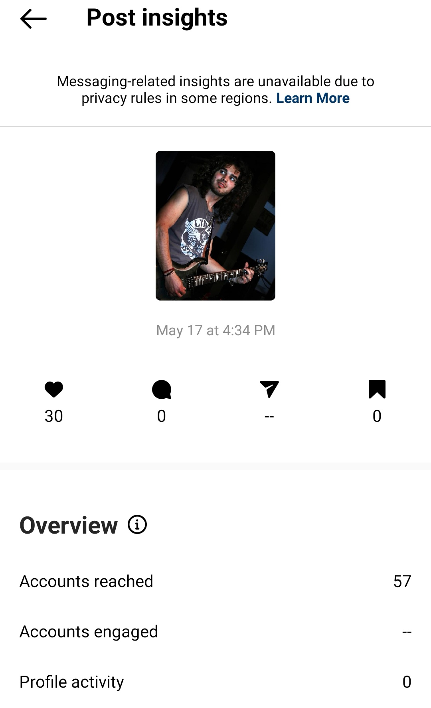
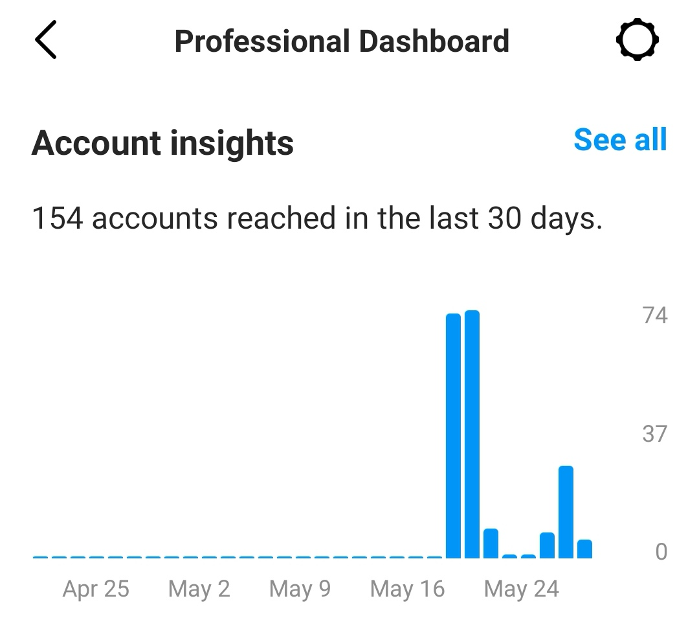

Documentazione
Abstract
La pagina web dei Back From Cali nasce come sito vetrina della band, con l’intento di pubblicizzare la sua musica, creare un supporto ufficiale alle loro pagine Social e farla conoscere a quante più persone possibili. La grafica, nella sua essenzialità ed intuitività, concorre a questi obiettivi, conferendo chiarezza alle varie informazioni fornite e segnalando in modo accessibile dove trovarle.
Project Management Plan
1. Benchmarking
1.1. Obiettivi
L’obbiettivo principale di questo sito è quello di pubblicizzare la band Back From Cali e fornire le informazioni relative a come contattarli, alle date dei loro concerti e a come ha preso vita il loro progetto, con aggiunta di fotografie, video e una traccia audio per renderli visibili ad un pubblico ampio che possa apprezzare la loro produzione.
1.2. Target utente
La pagina web si rivolge agli amanti del genere musicale della band e alle persone interessate a contattare la stessa per eventuali ingaggi. Si tratta quindi di un target ampio e tendenzialmente senza esclusive, anche se principalmente italiano e compreso nella fascia dei giovani.
1.3. Competitors
I competitors presi in considerazione sono i siti web di quattro band del panorama rock che affrontano gli stessi temi e si rivolgono allo stesso target. Nello specifico, oltre alla band ufficiale “Slash featuring Myles Kennedy and the Conspirators”, è stato analizzato il sito web di una band-icona come i Rolling Stones e quello di due band minori, entrambe tributi, rispettivamente i “Guns or Roses”, band inglese tributo dei “Guns n’ Roses”, e i “Brothers Conspiracy”, altra cover band italiana del gruppo Conspirators. Tutti i siti presentano collegamenti esterni con le rispettive pagine social.
GUNS OR ROSES Ritengo che la grafica del sito sia posticcia con interfacce poco attraenti, ma la scelta della palette è fedele ai colori della band originale e questo aiuta a creare una connessione emotiva con l’utente. La labelling del menù di navigazione secondaria posto nel footer della pagina crea ridondanza di contenuti e non è subito chiaro che se ne aggiungano anche di nuovi rispetto alla barra in alto.
BROTHERS CONSPIRACY Di questo sito web ho apprezzato il posizionamento del titolo e del menù di navigazione, di cui ho ripreso la divisione in sezioni. La grafica è anch’essa essenziale, agevolando la reperibilità delle informazioni. Un elemento particolare che non ho apprezzato a causa della sua intrusività è il pop-up che si apre automaticamente con il primo caricamento del sito, contenente una slideshow di foto del pubblico ai concerti della band. Un’altra carenza di questo sito riguarda il design, che non è stato pensato per essere mobile-friendly.
ROLLING STONES Un sito vetrina di indubbio impatto visivo. Il tema complessivo varia a seconda delle pagine, alternando prevalenze di temi chiari e temi scuri. Un fattore ostacolante per la UX è il fatto che cliccando sulla pagina “experience”, l’utente venga catapultato all’esterno del sito e disorientato dall’incoerenza grafica e spaziale della nuova pagina, senza riferimenti per ritornare al menù precedente.
Slash featuring Myles Kennedy and the Conspirators Il sito web della band ufficiale ha praticamente come unico obiettivo quello di vendere il loro merchandise e per questo ha la peculiarità di essere implementato dal punto di vista dell’e-commerce.
2. Struttura e layout
2.1. Architettura del sito
Rappresentazione ad albero delle pagine del sito web
2.2. Wireframe
|

Homepage |

Pagina Band |
|

Pagina Concerti |

Pagina Galleria |
|

Pagina Contatti |
2.3. Look and Feel
È stato scelto un tema chiaro, con il bianco (#fff, “white”) come colore di background sotto a scritte nere (“black”). I link delle pagine sono evidenziati dal colore grigio (#efefef, #777, “grey”, “dimgrey”) e reagiscono al passaggio del cursore cambiando colore. Nella barra di navigazione e nei dropdown menù ho alternato il bianco e le sfumature di grigio chiaro e scuro per dare evidenza alle voci di selezione, le quali anch’esse reagiscono al passaggio del cursore cambiando colore. 
Sono presenti elementi di interruzione come uno slideshow di tre immagini e una traccia audio in “home”, e un video nella pagina “concerti”.
- Font utilizzati:
- - “Yanone Kaffeesatz” sans-serif, nell’header per il titolo “Back From Cali” e per il body della pagina “band”;
- - “Rajdhani” sans-serif, per le voci del menù di navigazione, per il footer e per i contatti;
- - “Covered By Your Grace” corsivo, per il sottotitolo nell’header, per la tabella nella pagina “concerti” e per il titolo della sezione contatti nella pagina omonima.
Tutte le immagini utilizzate per il sito sono state scattate direttamente da me. Anche il videoclip linkato all’icona di Youtube nella pagina “contatti” è interamente di mia produzione.
3. Linguaggi e strumenti
3.1. Linguaggi web utilizzati
- - HTML
- - CSS
- - Sublime Text come text editor;
- - Google Fonts per i font;
- - Font Awesome per le icone;
- - Bootstrap per il carosello e altri elementi di grafica;
- - Adobe Photoshop per l’editing delle fotografie usate;
- - Lucidchart per la realizzazione del diagramma ad albero;
- - Moqups per la realizzazione del wireframe;
- - Github per la pubblicazione;
- - SEO Site Checkup per ottimizzare la discoverability;
- - Xml-sitemaps.com per creare la sitemap del sito;
- - Google Analytics per il monitoraggio degli utenti.
3.2. Strumenti tecnologici utilizzati
Communication Strategy
L’idea alla base di questo progetto web è stata creare un sito minimale dal punto di vista grafico ma efficace dal punto di vista informativo, un posto unico dove reperire velocemente tutte le informazioni pragmatiche riguardanti la band “Back From Cali”. A questo scopo, si è cercato di rendere intuitiva l’organizzazione logica della struttura suddividendo i contenuti in cinque sezioni tematiche, con percorsi brevi e una mise en page con prevalenza di spazi vuoti.
PRO: chiarezza, coerenza e quantità di informazioni, responsiveness;
CONTRO: mancanza di animazioni, scarsa interattività, lentezza di caricamento di alcune pagine;
Tutti i competitors analizzati utilizzano temi scuri e qui si trova una differenza di base rispetto alle mie scelte: ritengo che l'impiego di un colore scuro per il background, nonostante conferisca un forte impatto visivo, vada ad inficiare la leggibilità delle pagine con effetti negativi per gli utenti, rischiando che questi abbandonino più rapidamente il sito. Allo scopo di incoraggiare la permanenza dell’utente inoltre sono stati inseriti elementi di interruzione audio e video. I benefici di queste scelte sono rintracciabili nella durata media del coinvolgimento utente, superiore ad un minuto.
Il target utente è costituito da persone che apprezzano la musica rock ed in particolare dai fan del gruppo Slash featuring Myles Kennedy & The Conspirators, di cui i Back From Cali incarnano il tributo. Inoltre, il sito è mirato a soddisfare le esigenze di persone interessate ad ingaggiare la band per eventi di intrattenimento con musica live, come sagre e concerti. Si è cercato di soddisfare un target abbastanza ampio ed eterogeneo, principalmente italiano, senza rendere esclusiva nessuna fascia di età.
Questi gruppi di interesse vengono solitamente raggiunti tramite Social Networks, in particolare Facebook e Instagram, e tramite passaparola (soprattutto WhatsApp).
Fattori che possono aiutare a raggiungere questo target sono la semplicità dell'interfaccia, l’originalità dei contenuti, ma soprattutto la condivisione sui Social.
Promozione
La promozione del sito è stata svolta prevalentemente online, attraverso l’utilizzo di Instagram, e tramite passaparola, pubblicizzando sia online con WhatsApp che fisicamente di persona.
Valutazione dei risultati
L’obiettivo posto per la valutazione dei risultati è stato fissato nel raggiungimento di 20 likes ad almeno una foto pubblicata su Instagram.
Attraverso Google Analytics è possibile verificare un buon numero di visualizzazioni del sito.
